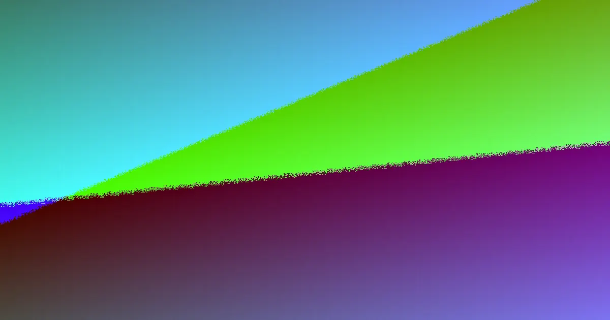

The signs that retaining wall installation is needed on a Brisbane block usually appear before any failure: a wall that leans further after wet weather, bulging or cracked panels, rotted timber near ground level, water pooling behind the face, or a boundary fence drifting out of line. On older cuts in established suburbs, often 30 to 60 years old, these patterns point to drainage and soil load problems, not just age. Quotes should be written, itemised and checked against approval triggers before pricing.
For local buyers, retaining wall installation brisbane signs you need because the wall, the water behind it and the fence above it behave as one system
Retaining Wall Installation Brisbane Signs You Need Explained
On many established Brisbane blocks the first clue is subtle. A wall that looked straight a few seasons ago now tilts a few degrees toward the downhill side. Fence posts above it creep out of line. Fresh soil appears at the base of the wall after heavy rain. These are the early signs homeowners notice, and they usually show up long before anything collapses.
Watch for the following patterns:
- A wall leaning into the yard, with the lean increasing after wet weather
- Bulging panels or sleepers that no longer form a straight line
- Rot, splitting or insect damage in older timber, especially near ground level
- Cracking through a masonry face or its joints
- Water ponding above the wall or weeping through it
- A boundary fence that leans because the ground it stands on is shifting
When two or more appear together, the structure is reporting how water and soil load are being managed, not merely how old it is. If you are still weighing up contractors, the Retaining Wall Installation Brisbane How to Choose: Guide covers the selection side in plain English.
What the damage pattern usually means
Each symptom points to a different cause, and the cause decides whether a repair will last. Rot concentrated at the base of a timber wall usually means moisture has been trapped against the posts for years, which is a drainage problem before it is a timber problem. A lean that grows after rain points to water building pressure behind the face. A bulge at mid-height often signals extra load from a driveway, filled area or pool sitting above the retained ground.
A fence that drifts out of plumb deserves special attention. On a sloped block the fence and the wall frequently act as one structure, so ground movement below shows up as leaning palings or panels above. Repairs that fix only the visible fence rarely solve that.
Material also shapes what failure looks like. H4 treated pine is the common entry point for garden edges and lower cuts. Concrete sleeper walls pair reinforced panels with galvanised posts. Core-filled besser block is steel-reinforced masonry chosen for taller structural work. None of these is inherently better; the site and the load decide what belongs there.
When the block itself is the warning sign
Sometimes the ground delivers the message before the wall does. Work across the region spans very different conditions, including ridge-and-gully blocks near the Taylor Range, reactive clay near the Bremer, canal and lake-edge fill, hinterland grades, basalt clay and soft river flats. Each behaves differently once saturated, so the same wall design will not answer every block.
Treat it as a prompt for site questions rather than a verdict:
- Is the wall holding back fill, a driveway, a pool or a filled terrace?
- Where does surface water go after heavy rain, and does any of it sit above the wall?
- Is the original drainage from an older cut still functioning, or silted up and crushed?
- Can a truck reach the wall, and where would spoil and backfill go?
- Have approval and engineering triggers been checked before any figure is given?
As a basic measuring habit, the face area is the height times the length, and that number, not a rough guess, is what makes quotes comparable.
Repair, replacement or staged work
Leaning, bulging and rotted walls are the repair-and-replacement scenarios that come up most, and the right path depends on what is driving the movement. Localised rot in a young, low garden wall may justify a sectional repair. A tall wall leaning under a loaded driveway, or an old timber wall rotted through at every post, usually argues for full replacement because the drainage and backfill behind it have failed as a system.
Staged work is possible where budget matters. One sound approach is to fix the drainage and rebuild the wall first, then reset the fence above it as a second stage, rather than paying to redo the fence twice. Spotting the retaining wall installation brisbane signs you addressed early is what makes staging an option instead of an emergency.
Whatever the scope, the quote should arrive in writing, name the material, state the dimensions, and show drainage, excavation and backfill as separate items rather than one blended total.
Who should act on these signs
This guidance fits three groups of owners: people with a block that falls away at the back, people with an ageing timber wall that moves a little further each wet season, and people whose fence line depends on the wall beneath it. Typical enquiries also come from owners of older cuts in established suburbs where the original structure is now 30 to 60 years old.
Coverage runs from Brisbane to Noosa, spanning Brisbane, Ipswich, the Gold Coast and the Sunshine Coast. Because the ground varies so much, no two blocks need the same answer, which is why the signs matter more than any single price.
Before calling, prepare a short brief: your suburb, the approximate height and length, what sits above or behind the wall, and a plain description of the failure such as lean, bulge or rot. If fencing is involved, say whether it is Colorbond, timber, a pool barrier, a driveway gate or gate automation, since each changes how the wall and fence meet.
- Document what you can see. Photograph the wall from both sides, measure the rough height and length, and note any lean, bulge, rot or cracking.
- Record what sits above and behind. List the fence type, and whether a driveway, pool or filled terrace adds load behind the wall.
- Describe the failure plainly. Tell the contractor whether the wall leans, bulges or shows rot, and mention the approximate age of the cut.
- Request written, itemised quotes. Ask for material, dimensions, excavation, drainage and backfill as separate line items tied to your actual site.
| Factor | Repair scope | Replacement scope |
|---|---|---|
| Wall face | Localised sections rebuilt | Full height and length reconstructed |
| Drainage | Existing system flushed or patched | New subsoil drainage designed and installed |
| Fence above | Usually left undisturbed | Reset or rebuilt with the wall |
| Approvals | Often minor | Engineering triggers checked before pricing |
| Backfill | Topped up behind the repaired zone | Full backfill and compaction program |
Common questions
Does a leaning wall always need to be fully replaced? Not always. A low, young wall with localised rot may suit a sectional repair. A tall wall leaning under a loaded driveway, or timber rotted through at multiple posts, usually points to replacement because the drainage and backfill behind the face have failed as a system.
Why does my fence lean when the wall below looks mostly fine? On sloped blocks the fence and wall often act as one structure. Ground movement below the fence line shows up as leaning palings or panels above, so fixing only the fence rarely lasts if the wall beneath keeps moving.
What information should I have ready before requesting a quote? Have your suburb, the rough height and length of the wall, what sits above or behind it, a plain description of the failure, and the fence type if fencing is involved. Better inputs lead to better first conversations.
This page outlines common warning signs that a Brisbane or South East Queensland retaining wall may need repair or replacement, and is general information rather than site-specific engineering advice.